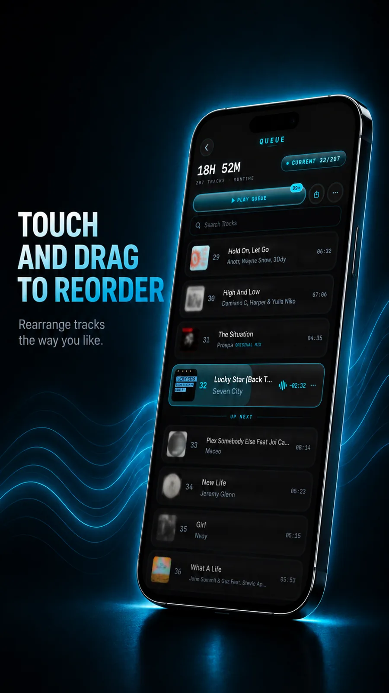

No ads, ever
No banners, no video breaks, no sponsored popups. Press play and hear music, not marketing.
MP3 player with no ads
VibeDeck Player is an MP3 player with no ads, no account and no tracking. Your MP3 files play offline on iPhone and Android, with a 3-band EQ and gain, pitch and tempo control, and DJ tools.

Free music apps usually mean one thing: ads between your songs, or a paywall to remove them. VibeDeck Player is free and still shows nothing. No banners, no videos, no popups. The business model is an optional Premium upgrade for the sound engine, not your attention.
No banners, no video breaks, no sponsored popups. Press play and hear music, not marketing.
Your MP3 files live on the device and play with no internet. Planes, subways, dead zones: all fine.
3-band EQ with gain, bass boost, pitch and tempo, waveform scrubbing and BPM readout on one dark screen.
Related: offline music player for iPhone, offline music player for Android.
None. No banners, no videos, no popups in the free version.
Fully. Files stay on your device and play with no connection.
The full sound engine: pitch and filter, 3-band EQ with gain, limiter, VibeMod, TONE, AURA and Smart Metadata.
Download VibeDeck Player
MP3 player with no ads for iPhone and Android. No account. No tracking.